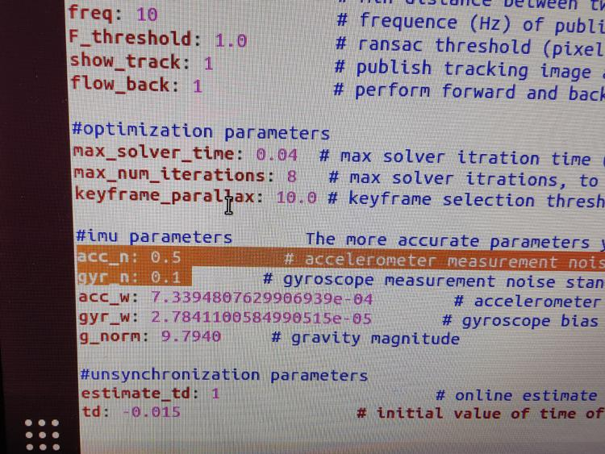

<!DOCTYPE html>
<html lang="zh-CN">

<head>
  <meta charset="utf-8" />
   
  <meta name="keywords" content="SLAM, C++, OpenCV, ROS, 算法, 机器学习, VIO, VINS, ORB-SLAM, 面试, 可穿戴" />
   
  <meta name="description" content="本章想要抽空把之前的VINSmono系统地学习一下。" />
  
  <meta name="viewport" content="width=device-width, initial-scale=1, maximum-scale=1" />
  
  
  
  
  <meta property="og:site_name" content="曾是少年" />
  <meta property="og:title" content="VINS-mono 学习笔记 | 曾是少年" />
  <meta property="og:description" content="本章想要抽空把之前的VINSmono系统地学习一下。" />
  <meta property="og:url" content="https://grobenis.github.io/2022/03/01/2022-03-01-VINS-mono/" />
  <meta property="og:type" content="article" />
  
  <meta property="og:image" content="https://grobenis.github.io/images/cover1.jpg" />
  
  <meta name="twitter:card" content="summary" />
  <title>
    VINS-mono 学习笔记 |  曾是少年
  </title>
  <meta name="generator" content="hexo-theme-yilia-plus">
  
  <link rel="shortcut icon" href="/images/cat.ico" />
  
  
<link rel="stylesheet" href="/css/main.css">

  <link rel="stylesheet" href="/css/custom.css?v=1788532970473" />
  
  <script src="https://cdn.jsdelivr.net/npm/pace-js@1.0.2/pace.min.js"></script>
  
  

  

<link rel="alternate" href="/atom.xml" title="曾是少年" type="application/atom+xml">
</head>

</html>


<body class="">
  <div id="app">
    <main class="content">
      <section class="outer">
  <article id="post-2022-03-01-VINS-mono" class="article article-type-post" itemscope
  itemprop="blogPost" data-scroll-reveal>

  <div class="article-inner">
    
    <header class="article-header">
       
<h1 class="article-title sea-center" style="border-left:0" itemprop="name">
  VINS-mono 学习笔记
</h1>
  

    </header>
    

    
    <div class="article-meta">
      <a href="/2022/03/01/2022-03-01-VINS-mono/" class="article-date">
  <time datetime="2022-03-01T15:55:29.000Z" itemprop="datePublished">2022-03-01</time>
</a>
      
  <div class="article-category">
    <a class="article-category-link" href="/categories/SLAM/">SLAM</a>
  </div>

      
      
<div class="word_count">
    <span class="post-time">
        <span class="post-meta-item-icon">
            <i class="ri-quill-pen-line"></i>
            <span class="post-meta-item-text"> 字数统计:</span>
            <span class="post-count">9.4k字</span>
        </span>
    </span>

    <span class="post-time">
        &nbsp; | &nbsp;
        <span class="post-meta-item-icon">
            <i class="ri-book-open-line"></i>
            <span class="post-meta-item-text"> 阅读时长≈</span>
            <span class="post-count">34分钟</span>
        </span>
    </span>
</div>

      
    </div>
    

    
    
    <div class="tocbot"></div>


    

    
    <div class="article-entry" itemprop="articleBody">
      
      

      
      <p>本章想要抽空把之前的VINS_mono系统地学习一下。</p>
<p>本文是对 VINS-mono 的系统学习笔记，梳理这一单目视觉惯性系统的完整框架：前端通过 KLT 光流跟踪特征并对 IMU 测量做预积分，初始化恢复位姿、速度与重力矢量初值，滑动窗口内联合优化视觉与惯性测量，最后经闭环检测与四自由度位姿图优化消除累积漂移。</p>
<blockquote>
<p><strong>视觉惯性紧耦合，小代价换高精度</strong></p>
</blockquote>
<span id="more"></span>

<h2 id="简介"><a href="#简介" class="headerlink" title="简介"></a>简介</h2><h2 id="论文"><a href="#论文" class="headerlink" title="论文"></a>论文</h2><h3 id="摘要"><a href="#摘要" class="headerlink" title="摘要"></a>摘要</h3><p>本文提出了一种用于在各种环境中进行状态估计的单目视觉惯性系统 (VINS)。单目相机和低成本的惯性测量单元 (IMU) 构成了用于六自由度状态估计的最小传感器套件。本文算法迭代地优化有界滑动窗口中的视觉和惯性测量，以执行准确的状态估计。视觉结构由滑动窗口中的关键帧保持，而惯性度量测量则通过关键帧之间的预积分来保持。我们的系统对未知状态的初始化、在线相机-IMU 外部参数校准、在球体上定义的统一重投影误差、循环检测和四自由度位姿图优化具有鲁棒性。这些特性使我们的系统实用且易于使用。我们通过与其他最先进的算法进行比较来验证我们系统在公共数据集和真实世界实验中的性能。我们还在 MAV 平台上执行机载闭环自主飞行，并将算法移植到 iOS 应用程序。我们强调所提出的工作是一个可靠且完整的系统，可以在其他智能平台上轻松操作。我们开源了我们的实现代码和 iOS 移动设备上的增强现实 (AR) 应用程序。</p>
<h3 id="I-总体简介"><a href="#I-总体简介" class="headerlink" title="I. 总体简介"></a>I. 总体简介</h3><p>本文所提出的视觉惯性系统的结构如下图所示。</p>
<p></p>
<ol>
<li>第一部分是数据测量处理前端，它从每个新图像帧提取、跟踪特征并在两帧之间预积分所有 IMU 数据。</li>
<li>第二部分是初始化过程，它提供必要的初始值（姿态、速度、重力矢量、陀螺仪偏差和 3D 特征位置）来引导非线性系统。</li>
<li>第三部分实现非线性图优化，通过优化所有视觉、惯性信息来解决我们滑动窗口中的状态。</li>
<li>最后，位姿图优化模块（参见第 VIII 节）接收几何验证的重定位结果，并执行全局优化以消除漂移。 它还实现了位姿图重用。 （VIO 和位姿图优化模块分别在单独的线程中同时运行）</li>
</ol>
<p>与适用于立体相机的最先进的 VIO 算法 OKVIS [15] 相比，我们的算法是专门为单目相机设计的。 因此，我们特别提出了初始化程序、关键帧选择标准，并使用和处理大视场 (FOV) 相机以获得更好的跟踪性能。 此外，我们的算法提出了一个完整的系统，具有闭环和位姿图重用模块。</p>
<p>符号定义：我们将 $(·)^w$ 视为世界坐标系，其中重力矢量的方向与其 z 轴对齐。 $(·)^b$ 是与 IMU 框架对齐的主体框架。$ (·)^c$ 是相机框架。我们同时使用 R 和四元数 q 来表示旋转矩阵。四元数对应于汉密尔顿符号。我们主要在状态向量中使用四元数，但旋转矩阵也用于 3-D 向量的方便旋转。 $q^w_b$ , $p^w_b$ 是从body坐标系到世界坐标系的旋转和平移。 $b_k$ 是拍摄第 k 张图像时的身体帧。 $c_k$ 是拍摄第 k 张图像时的相机帧。 ⊗ 是两个四元数的乘法运算。 $g^w = [0, 0, g]^T$ 是世界坐标系中的重力矢量。</p>
<h3 id="II-测量预处理"><a href="#II-测量预处理" class="headerlink" title="II 测量预处理"></a>II 测量预处理</h3><p>我们在本节中预处理视觉和惯性测量。</p>
<ul>
<li>对于视觉测量，我们跟踪连续帧之间的特征并检测最新帧中的新特征。</li>
<li>对于 IMU 测量，我们将它们在两个连续帧之间进行预积分。</li>
</ul>
<p>请注意，IMU 测量受偏差和噪声的影响。 因此，我们在 IMU 预集成和优化部分特别考虑了偏差，这对于低成本 IMU 芯片至关重要。</p>
<h4 id="A-视觉测量前段"><a href="#A-视觉测量前段" class="headerlink" title="A. 视觉测量前段"></a>A. 视觉测量前段</h4><p>对于每张新图像，现有特征由 KLT 稀疏光流算法 [26] 跟踪。同时，检测新的角点特征 [27] 以保持每个图像中的最小数量（100-300）特征。检测器通过设置两个相邻特征之间的最小像素间隔来强制实现均匀的特征分布。在通过异常值拒绝后，特征被投影到一个单位球体。异常值剔除由基本矩阵测试中的 RANSAC 步骤执行。</p>
<p>在此步骤中还选择了关键帧。我们有两个关键帧选择标准。</p>
<ol>
<li>其中之一是平均视差。如果跟踪到的特征的平均视差超过某个阈值，我们将这张图像视为关键帧。请注意，不仅平移而且旋转都会引起视差；但是，不能在仅旋转运动中对特征进行三角剖分。为了避免这种情况，我们在计算视差时使用 IMU 传播结果来补偿旋转。</li>
<li>另一个标准是跟踪质量。如果跟踪特征的数量低于某个阈值，我们也将此帧视为关键帧。</li>
</ol>
<h4 id="B-IMU预积分"><a href="#B-IMU预积分" class="headerlink" title="B. IMU预积分"></a>B. IMU预积分</h4><p>我们通过结合 IMU 偏差校正 [28] 扩展了我们之前的工作 [7] 中提出的 IMU 预积分。 与[28]积分，我们推导出连续时间动态中的噪声传播。 此外，IMU 预积分结果也用于初始化过程以校准初始状态。</p>
<p>1）IMU噪声与偏差</p>
<p>$$
\hat{a}_t = a_t + b_{a_t} +R^t_w g^w +n_a
$$</p>
<p>$$
\hat{w}_t = w_t + b_{w_t} +n_w
$$</p>
<p>我们假设加速度和角速度测量中的额外的噪声都是高斯白噪声，$n_a\sim \mathcal{N}(0, \sigma^2_a)$, $n_w\sim\mathcal{N}(0,\sigma_w^2)$</p>
<p>加速度偏差和陀螺仪偏差被建模为随机游走，其导数是高斯白噪声，$n_{b_a}\sim \mathcal{N}(0, \sigma^2_{b_a})$, $n_{b_w}\sim \mathcal{N}(0, \sigma^2_{b_w})$</p>
<p>$$
\dot{b}_{a_t} = n_{b_a}\\
\dot{b}_{w_t} = n_{b_w}
$$</p>
<p>2)预积分，给定对应于图像帧$b_k$ 和 $b_{k+1}$ 的两个时刻，状态变量受时间间隔 $[k, k + 1]$ 期间的惯性测量约束：</p>
<p>$$
p^w_{b_{l+1}} = p^w_{b_k} +v^w_{b_k}\Delta t_k + \int\int_{t\in[k, k+1]}(R^w_t(\hat{a}_t - b_{a_t})-g^w)dt^2
$$</p>
<p>$$
v^w_{b_{k+1}} = v^w_{b_k} + \int_{t\in[k,t+1]}(R^w_t(\hat{a}_t-b_{a_t})-g^w)dt
$$</p>
<p>$$
q^w_{b_{k+1}} = q^w_{b_k} \otimes\int_{t \in [k, k+1]}\frac{1}{2}\Omega(\hat{w}_t - b_{w_t})q^{b_k}_t dt
$$</p>
<p>其中：</p>
<p>$$
\Omega (w) = \begin{bmatrix} -\lfloor w \rfloor_{\times}  &amp; w \\ -w^T &amp; 0 \end{bmatrix}
$$</p>
<p>$$
\lfloor w \rfloor _ \times =
\begin{bmatrix} -\lfloor 0 &amp; - w_z  &amp; w_y \\ w_z &amp; 0 &amp; -w_x \\ - w_y &amp; w_x &amp; 0 \end{bmatrix}
$$</p>
<p>$\Delta t_x$ 是时间间隔$[k ,k+1]$的持续时间， $\hat{w}_t$, $\hat{a}_t$是原始的IMU测量。它在相机坐标系下，并且被加速度偏差$b_a$, 加速度偏差$b_\omega$ 以及噪声影响。</p>
<p>可以看出，IMU 状态传播需要帧 $b_k$ 的旋转、位置和速度。 当这些起始状态发生变化时，我们需要重新传播 IMU 测量值。 特别是在基于优化的算法中，每次调整姿势时，我们都需要在它们之间重新传播 IMU 测量值。 这种传播策略是计算消耗的。 为了避免重复传播，我们采用预积分算法。</p>
<p>将 IMU 传播的参考坐标系改为局部坐标系 $b_k$ 后，我们只能对与线加速度 $\hat{a}$ 和角速度$\hat{\omega}$ 相关的部分进行预积分，如下所示：</p>
<p>$$
R^{b_k}_\omega p^w_{b_{k+1}} = R.b
$$</p>
<p>3） 误差校准：</p>
<p>如果偏差的估计变化很小，我们通过它们关于偏差的一阶近似值进行调整$\alpha^{b_k}_{b_{k+1}}$,$\beta^{b_k}_{b_{k+1}}$, $\gamma^{b_k}_{b_{k+1}}$，</p>
<p>$$
\alpha^{b_k}_{b_{k+1}} \simeq \hat{\alpha}^{b_k}_{b_{k+1}} + J^\alpha_{b_a} \delta b_{a_k} + J^\alpha_{b_w} \delta b_{w_k}
$$</p>
<p>$$
\beta^{b_k}_{b_{k+1}} \simeq \hat{\beta}^{b_k}_{b_{k+1}} + J^\beta_{b_a} \delta b_{a_k} + J^\beta_{b_w} \delta b_{w_k}
$$</p>
<p>$$
\gamma^{b_k}_{b_{k+1}} \simeq \hat{\gamma}^{b_k}_{b_{k+1}} \otimes
\begin{bmatrix}
1 \\ \frac{1}{2}J^\gamma_{b_w} \delta b_{w_k}
\end{bmatrix}
$$</p>
<p>否则，当偏差的估计发生显著变化时，我们会在新的偏差估计下进行重新传播。 这种策略为基于优化的算法节省了大量的计算资源，因为我们不需要重复传播 IMU 测量。</p>
<h3 id="V-估计初始化"><a href="#V-估计初始化" class="headerlink" title="V 估计初始化"></a>V 估计初始化</h3><p>单目紧耦合VIO是一个高度非线性的系统，因此在一开始就需要一个准确的初始估计。本文则通过松耦合的IMU与积分与基于视觉重建进行对齐。</p>
<h4 id="A-滑动窗口中纯视觉的SFM"><a href="#A-滑动窗口中纯视觉的SFM" class="headerlink" title="A 滑动窗口中纯视觉的SFM"></a>A 滑动窗口中纯视觉的SFM</h4><p>初始化过程从纯视觉 SfM 开始，以估计最大比例的相机姿势和特征位置图。<br>我们在一个滑动窗口中维护几个帧，以实现有限的计算复杂度。首先，我们检查最新帧和所有先前帧之间的特征对应关系。如果我们能在滑动窗口中找到最新帧与任何其他帧之间的稳定特征跟踪（超过 30 个跟踪特征）和足够的视差（超过 20 个像素）。我们使用五点算法 [34] 恢复这两个帧之间的相对旋转和按比例平移。然后，我们任意设置比例并对这两帧中观察到的所有特征进行三角测量。基于这些三角特征，执行透视点（PnP）方法[35]来估计窗口中所有其他帧的姿势。最后，应用全局全束调整 [36] 以最小化所有特征观察的总重投影误差。</p>
<p>由于我们还没有关于世界坐标系的任何知识，我们将第一个相机坐标系 $(·)^{c_0}$ 设置为 SfM 的参考坐标系。</p>
<p>所有帧的位置$(\bar{p}^{c_0}_{c_k},q^{c_0}_{c_k})$和特征位置都通过与$(·)^{c_0}$。给定相机与IMU之间的外参，我们即可把坐标从相机坐标系转换到体坐标系:</p>
<p>$$
a^{c_0}_{b_k} = q^{c_0}_{c_k} \otimes(q^b_c)^{-1}\\
s \bar{p}^{c_0}_{b_k} =s \bar{p}^{c_0}_{c_k} - R^{C_0}_{b_K}p^b_c
$$</p>
<p>其中s是位置的尺度参数，将会在接下来的章节中解决。</p>
<h4 id="B-视觉-惯性对齐"><a href="#B-视觉-惯性对齐" class="headerlink" title="B 视觉-惯性对齐"></a>B 视觉-惯性对齐</h4><p>视觉惯性对其的示意图如下图所示。主要的目的就是对其带尺度的IMU预积分信息与视觉架构信息。</p>
<p>1） 陀螺仪误差校准：考虑窗口中的两个连续帧$b_k$和$b_{k+1}$，我们从视觉SfM得到旋转$q^{c_0}_{b_k}$和$q^{c_0}_{b_{k+1}}$，以及从IMU预积分得到相对约束$y^{b_k}_{b_{k+1}}$。 我们将 IMU 预积分项相对于陀螺仪偏差线性化，并最小化以下损失函数：</p>
<p>$$
\min_{\delta b_w} \sum_{k\in\mathcal{B}}||{q^{c_0}_{b_{k+1}}}^{-1}\otimes q^{c_0}_{b_k} \otimes \gamma ^{b_k}_{b_{k+1}}||^2
$$</p>
<p>$$
\gamma^{b_k}_{b_{k+1}} \approx \hat{\gamma}^{b_k}_{b_{k+1}} \otimes
\begin{bmatrix}
1 \\ \frac{1}{2}J^\gamma_{b_w} \delta b_{w_k}
\end{bmatrix}
$$</p>
<p>其中，$\mathcal{B}$ 表示窗口中所有的帧数，通过这种方法，我们获得了陀螺仪偏差的初始标定值$b_w$, 之后，我们通过新的陀螺仪误差重新传播了所有的预积分项$\hat{\alpha}^{b_k}_{b_{k+1}}$， $\hat{\beta}^{b_k}_{b_{k+1}}$, 以及$\gamma^{b_k}_{b_{k+1}}$。</p>
<p>2）速度，重力矢量，矩阵尺度因子初始化</p>
<p>陀螺仪偏差初始化后，我们继续初始化导航的其他基本状态，即速度、重力矢量和度量尺度</p>
<p>$$
\chi_I  = [v^{b_0}_{b_0},v^{b_1}_{b_1},v^{b_n}_{b_n}, g^{c_0}, s]
$$</p>
<p>其中$v^{b_k}_{b_{k}}$是拍摄第k张图像时身体帧中的速度，$g^{c_0}$是$c_0$帧中的重力向量，并将单目SfM缩放为公制单位。</p>
<p>考虑窗口中连续的两个帧$b_k$和$b_{k+1}$，我们有以下等式：</p>
<p>$$
α^{b_k}_{b_{k+1}}=R^{b_k}_{c_0}(s(\bar{p}^{c_0}_{b_{k+1}}−\bar{p}^{c_0}_{b_k})+\frac{1}{2}g^{c_0}Δt^2_k−R^{c_0}_{b_k}v^{b_k}_{b_k}Δt_k) \\
β^{b_k}_{b_{k+1}}=R^{b_k}_{c_0}(R^{c_0}_{b_{k+1}}v^{b_{k+1}}_{b_{k+1}}+g^{c_0}Δt_k−R^{c_0}_{b_k}v^{b_k}_{b_k})
$$</p>
<p>我们可以将(6)和(9)组合成以下线性测量模型：</p>
<p></p>
<p>可以看出，$R^{c_0}_{b_k}$、$R^{c_0}_{b_{k+1}}$、$\bar{p}^{c_0}_{c_k}$、$\bar{p}^{c_0}_{c_{k+1}}$是从up-to-scale单目视觉SfM得到的。Δtki是两个连续帧之间的时间间隔。</p>
<p>通过求解这个线性最小二乘问题:</p>
<p>$$
\min_{\chi_I}∑_{k∈B}||\hat{z}^{b_k}_{b_{k+1}}−H^{b_k}_{b_{k+1}}\chi_I||^2
$$</p>
<p>我们可以得到窗口中每一帧的体帧速度，视觉参考帧中的重力向量( ·)c0，以及比例参数。</p>
<p>3)尺度优化，从前面的线性初始化步骤获得的重力矢量可以通过限制大小来细化。在大多数情况下，重力矢量的大小是已知的。这导致重力矢量只剩下 2个自由度。因此，我们在其切线空间上使用两个变量来扰动重力，从而保留 2-DOF。我们的重力向量受到$\mathcal{g}(\bar{\hat{\mathcal{g}}}+δg)$的扰动，$δg=w_1b_1+w_2b_2$，其中g是已知的重力大小，$\hat{\bar{g}}$是表示重力方向的单位向量。$b_1$和$b_2$是跨越切平面的两个正交基，如图图 4.$w_1$ 和 $w_2$ 分别是对 $b_1$ 和 $b_2$ 的二维扰动。我们可以任意找到$b_1$和$b_2$的任意集合旋转切线空间。然后，我们将(9)代入$\mathcal{g}(\bar{\hat{\mathcal{g}}}+δg)$，并与其他状态变量一起求解2-Dδg。这个过程反复多次，直到 g 收敛。</p>
<p></p>
<p>4）完成初始化：对重力向量进行细化后，我们可以通过将重力旋转到z轴得到世界坐标系和相机坐标系$c_0$之间的旋转$q^w_{c_0}$。然后我们将所有变量从参考坐标系(·)c0 旋转到世界坐标系(·)w。身体坐标系速度也将旋转到世界坐标系。来自视觉 SfM 的平移分量将被缩放为公制单位。至此，初始化过程完成，所有这些度量值将被馈送到紧密耦合的单目 VIO。</p>
<h3 id="VI-稠密紧耦合的单目VIO"><a href="#VI-稠密紧耦合的单目VIO" class="headerlink" title="VI 稠密紧耦合的单目VIO"></a>VI 稠密紧耦合的单目VIO</h3><p>在估计器初始化之后，我们继续使用基于滑动窗口的紧密耦合单目 VIO 来进行高精度和鲁棒的状态估计。 滑动窗口公式的说明如图 5 所示。</p>
<p></p>
<h4 id="A-形式"><a href="#A-形式" class="headerlink" title="A. 形式"></a>A. 形式</h4><p>滑动窗口中的全状态向量定义为</p>
<p></p>
<p>其中 $x_{k}$ 是捕获第 k 个图像时的 IMU 状态。它包含了IMU在世界坐标系中的位置、速度和方向，以及IMU体坐标系中的加速度偏差和陀螺仪偏差。n是关键帧的总数，m是滑动窗口中的特征总数。λ是第一个特征来自它的第一次观察的逆深度。</p>
<p>我们使用视觉惯性束调整公式。将所有测量残差的先验和马氏范数之和最小化，以获得最大后验估计为</p>
<p></p>
<p>其中 Huber 范数 [37] 定义为：</p>
<p></p>
<p>其中，$r_B(\hat{z}^{b_k}_{b_{k+1}},\chi)$和$r_C(\hat{z}^{c_j}_l,\chi)$分别是IMU和视觉测量的残差。残差项的详细定义将在第 VI-B 和 VI-C 节中介绍。B 是所有 IMU 测量的集合，C 是在当前滑动窗口中至少观察到两次的特征集合。${r_p,H_p}$是边缘化的先验信息。 Ceres 求解器 [38] 用于解决这个非线性问题。</p>
<ul>
<li>huber损失函数可以降低误匹配的影响；</li>
</ul>
<h4 id="B-IMU测量残差"><a href="#B-IMU测量残差" class="headerlink" title="B. IMU测量残差"></a>B. IMU测量残差</h4><p>考虑滑动窗口中两个连续帧 $b_k$ 和 $b_{k+1}$ 内的 IMU 测量值，预积分 IMU 测量值的残差可以定义为:</p>
<p></p>
<p>其中$[·]_{xyz}$提取四元数q的向量部分以表示错误状态。$δθ^{b_k}_{b_{k+1}}$是四元数的3-D错误状态表示。$[\hat{α}^{b_k}_{b_{k+1}},\hat{β}^{b_k}_{b_{k+1}},\hat{γ}^{b_k}_{b_{k+1}}$是预积分IMU 两个连续图像帧之间的测量项。 加速度计和陀螺仪偏差也包含在在线校正的残差项中。</p>
<ul>
<li>零偏在质量不好的IMU下，变化比较快</li>
</ul>
<h4 id="C-视觉测量残差"><a href="#C-视觉测量残差" class="headerlink" title="C. 视觉测量残差"></a>C. 视觉测量残差</h4><p>与在广义图像平面上定义重投影误差的传统针孔相机模型相比，我们在单位球面上定义相机测量残差。 几乎所有类型相机的光学器件，包括广角相机、鱼眼相机或全向相机，都可以建模为连接单位球体表面的单位射线。</p>
<p>考虑在第 i 个图像中首先观察到的第 l 个特征，在第 j 个图像中的特征观察的残差定义为：</p>
<p></p>
<p>其中$[\hat{u}^{c_i}_l,\hat{v}^{c_i}_l]$是第l个特征发生在第i个图像中的第$l$个观测值。$[\hat{u}^{c_j}_l,\hat{v}^{c_j}_l]$是第j个图像中相同特征的观测值。$π^{−1}_c$是反投影函数，它将像素位置转换为 使用相机内在参数的单位向量。 由于视觉残差的自由度为 2，我们将残差向量投影到切平面上。$b_1$ 和 $b_2$ 是两个任意选择的正交基，它们跨越$\hat{\bar{\mathcal{P}}}^{c_j}_l$ 的切平面，如图 6 所示。方差 $P^{c_j}_l$，如 (14) 中使用的 , 也从像素坐标传播到单位球体上。</p>
<p></p>
<h4 id="D-边缘化"><a href="#D-边缘化" class="headerlink" title="D. 边缘化"></a>D. 边缘化</h4><p>为了限制我们基于优化的 VIO 的计算复杂度，引入了边缘化。我们从滑动窗口中选择性地边缘化IMU状态$x_k$和特征$λ_l$，同时将边缘化状态对应的测量值转换为先验。</p>
<p></p>
<p>如图7所示，当第二个最新帧是关键帧时，它将留在窗口中，最旧的帧被边缘化掉及其相应的测量值。否则，如果第二个最新帧是非关键帧，我们会抛出视觉测量并保留连接到该非关键帧的 IMU 测量。为了保持系统的稀疏性，我们不会边缘化所有非关键帧的测量。我们的边缘化方案旨在将空间分离的关键帧保留在窗口中。这确保了特征三角测量有足够的视差，并最大限度地提高了在大激励下保持加速度计测量的概率。边缘化是使用 Schur 补码 [39] 进行的。我们基于与移除状态相关的所有边缘化测量构建一个新的先验。新的先验被添加到现有的先验上。我们注意到边缘化导致线性化点的早期修复，这可能导致次优估计结果。但是，由于 VIO 可以接受小的漂移，因此认为边缘化造成的负面影响并不重要。</p>
<h4 id="E-Camera-Rate-State-估计的仅运动视觉惯性优化"><a href="#E-Camera-Rate-State-估计的仅运动视觉惯性优化" class="headerlink" title="E. Camera-Rate State 估计的仅运动视觉惯性优化"></a>E. Camera-Rate State 估计的仅运动视觉惯性优化</h4><p>对于手机等计算能力较低的设备，由于非线性优化的大量计算需求，紧耦合的单目 VIO 无法实现相机级输出。为此，除了完全优化之外，我们还采用了轻量级的仅运动视觉惯性优化来将状态估计提升到相机速率（30 Hz）。仅运动视觉惯性优化的成本函数是与 (14) 中的单眼 VIO 相同。</p>
<p>核心思想：<strong>然而，我们并没有优化滑动窗口中的所有状态，而是只优化固定数量的最新 IMU 状态的位姿和速度。我们将特征深度、外部参数、偏差和我们不想优化的旧 IMU 状态视为恒定值。</strong></p>
<p>我们确实使用所有视觉和惯性测量来进行仅运动优化。这导致比单帧 PnP 方法更平滑的状态估计。所提出策略的说明如图 8 所示。与在最先进的嵌入式计算机上可能导致超过 50 ms 的完全紧密耦合的单目 VIO 相比，仅运动视觉惯性优化只需要大约 5 毫秒的计算时间。这实现了低延迟相机速率姿态估计，这对无人机和 AR 应用特别有益。</p>
<ol>
<li>通过限制优化规模，固定某些优化项以提高速率；</li>
</ol>
<h4 id="F-用于-IMU-速率状态估计的-IMU-前向传播"><a href="#F-用于-IMU-速率状态估计的-IMU-前向传播" class="headerlink" title="F. 用于 IMU 速率状态估计的 IMU 前向传播"></a>F. 用于 IMU 速率状态估计的 IMU 前向传播</h4><p>IMU 测量的速率远高于视觉测量。 尽管我们的 VIO 的频率受到图像捕获频率的限制，但我们仍然可以使用最近的 IMU 测量直接传播最新的 VIO 估计，使性能达到 IMU速率。高频状态估计可以用作闭环闭合的状态反馈。 使用该 IMU 速率状态估计的自主飞行实验在第 IX-C 节中介绍。</p>
<h3 id="VII-重定位"><a href="#VII-重定位" class="headerlink" title="VII 重定位"></a>VII 重定位</h3><p>我们的滑动窗口和边缘化方案限制了计算复杂度，但它也为系统引入了累积漂移。 为了消除漂移，提出了一种与单目 VIO 无缝集成的紧密耦合重定位模块。 重新定位过程从一个回环检测模块开始，该模块识别已经访问过的地方。 然后在闭环候选和当前帧之间建立特征级连接。 这些特征对应紧密集成到单目 VIO 模块中，从而以最少的计算实现无漂移状态估计。 多个特征的多次观测直接用于重定位，从而获得更高的精度和更好的状态估计平滑度。 图 9(a) 显示了重定位过程的图解说明。</p>
<p></p>
<p></p>
<h4 id="A-回环检测"><a href="#A-回环检测" class="headerlink" title="A. 回环检测"></a>A. 回环检测</h4><p>我们利用 DBoW2 [29]，一种最先进的词袋位置识别方法，用于回环检测。 除了用于单目 VIO 的角点特征外，BRIEF 描述子 [40] 还检测和描述了 500 个角点。 额外的角点特征用于在回环检测中实现更好的召回率。 描述符被视为视觉词来查询视觉数据库。 DBoW2 在时间和几何一致性检查后返回闭环候选。 我们保留所有的简要描述符用于特征检索，但丢弃原始图像以减少内存消耗。</p>
<h4 id="B-特征检索"><a href="#B-特征检索" class="headerlink" title="B. 特征检索"></a>B. 特征检索</h4><p>当检测到循环时，通过检索特征对应关系来建立局部滑动窗口和闭环候选之间的连接。 通过BRIEF描述符匹配找到对应关系。 描述符匹配可能会导致一些错误的匹配对。 为此，我们使用两步几何异常值剔除，如图 10 所示。</p>
<p></p>
<ol>
<li>2-D–2-D：使用 RANSAC [33] 进行的基本矩阵测试。我们使用当前图像和闭环候选图像中检索到的特征的 2-D 观察来执行基本矩阵测试。</li>
<li>3 -D–2-D：使用 RANSAC [35] 进行的 PnP 测试。 基于已知的特征在局部滑动窗口中的 3-D 位置和闭环候选图像中的 2-D 观察结果，我们执行 PnP 测试。</li>
</ol>
<p>在异常值拒绝后，我们将此候选作为正确的回环检测并执行重新定位。</p>
<h4 id="C-紧耦合的重定位"><a href="#C-紧耦合的重定位" class="headerlink" title="C. 紧耦合的重定位"></a>C. 紧耦合的重定位</h4><p>重定位过程有效地将当前滑动窗口与过去的姿势对齐。在重定位期间，我们将所有闭环帧的姿态视为常数。我们使用<strong>所有 IMU 测量、局部视觉测量测量和检索到的特征对应</strong>来共同优化滑动窗口。我们可以很容易地为闭环框架观察到的检索特征写出与 VIO 中的视觉测量相同的模型，如（17）。唯一的区别是闭环帧的位姿 $(\hat{q}^w_v,\hat{p}^w_v)$，取自位姿图（参见第 VIII 节），或直接取自过去的里程计输出（如果这是第一次重新定位），被视为一个常数。为此，我们可以用额外的循环项稍微修改（14）中的非线性成本函数</p>
<p></p>
<p>其中$\mathcal{L}$是在闭环帧中检索到的特征的观察集合。$(l，v)$表示在闭环帧v中观察到的第一个特征。</p>
<p>请注意，尽管成本函数与（14）略有不同，但要解决的状态的维数保持不变，因为闭环帧的位姿被认为是常数。</p>
<p>当使用当前滑动窗口建立多个闭环时，我们同时使用来自所有帧的所有闭环特征对应关系进行优化。这为重定位提供了多视图约束，从而获得更高的精度和更好的平滑度。重新定位后保持一致性的全局优化将在第 VIII 节中讨论。</p>
<h3 id="VIII全局图优化与地图重用"><a href="#VIII全局图优化与地图重用" class="headerlink" title="VIII全局图优化与地图重用"></a>VIII全局图优化与地图重用</h3><p>重新定位后，开发了额外的位姿图优化步骤，以确保将过去的位姿集注册到全局一致的配置中。</p>
<h4 id="A-四个累积漂移方向"><a href="#A-四个累积漂移方向" class="headerlink" title="A. 四个累积漂移方向"></a>A. 四个累积漂移方向</h4><p>得益于重力的惯性测量，在 VINS 中可以完全观察到滚动角和俯仰角。 如图 11 所示，随着物体的移动，3-D位置和旋转相对于参考系发生了相对变化。 然而，我们可以通过重力矢量来确定水平面，这意味着我们一直在观察绝对横滚和俯仰角。 因此，滚动和俯仰区域是世界坐标系中的绝对状态，而 x、y、z 和偏航是相对于参考坐标系的相对估计。 累积漂移仅发生在 x、y、z 和偏航角。 为了充分利用有效信息并有效地纠正漂移，我们修复了无漂移横滚和俯仰，并且仅在 4-DOF 中进行位姿图优化。</p>
<p></p>
<ul>
<li>涉及到vins的能观性：Kelly[6] ， Li[5]分析了Vins有四个自由度是不可观的：1）绝对的位置position; 2) 重力方向绝对的yaw角. 我们目前估计的位置和yaw都是相对于参考系来说的.</li>
</ul>
<h4 id="B-将关键帧添加到姿态图中"><a href="#B-将关键帧添加到姿态图中" class="headerlink" title="B. 将关键帧添加到姿态图中"></a>B. 将关键帧添加到姿态图中</h4><p>关键帧在 VIO 过程之后添加到姿态图中。每个关键帧作为位姿图中的一个顶点，并通过两种类型的边与其他顶点连接，如图 12.1 所示</p>
<p></p>
<p>1） 序列边：一个关键帧与其先前的关键帧建立了几个序列边。序列边表示两个关键帧之间的相对变换，直接取自 VIO。考虑到关键帧$i$和它之前的关键帧$j$，顺序边只包含相对位置$\hat{p}^i_{i,j}$和偏航角$\hat{\phi}_{ij}$</p>
<p></p>
<ol start="2">
<li>闭环边：如果关键帧有回环连接，它通过位姿图中的闭环边连接闭环框架。类似地，闭环边缘仅包含一个 4-DOF 相对位姿变换，其定义与 (19) 相同。使用重定位的结果获得闭环边缘的值。</li>
</ol>
<h4 id="C-4-DOF-位姿图优化"><a href="#C-4-DOF-位姿图优化" class="headerlink" title="C. 4-DOF 位姿图优化"></a>C. 4-DOF 位姿图优化</h4><p>定义第i帧和第j帧之间边缘的残差最小为</p>
<p></p>
<p>其中$\hat{\phi}_i$和$\hat{θ}_i$是从单目 VIO 获得的滚动角和俯仰角的固定估计值。</p>
<p>通过最小化以下成本函数来优化序列边和闭环边的整个图：</p>
<p></p>
<p>其中 $\mathcal{S}$ 是所有连续边的集合，$\mathcal{L}$ 是所有闭环边的集合。尽管紧耦合的重定位已经有助于消除错误的闭环，但我们添加了另一个 Huber normρ(·) 以进一步减少任何可能的错误循环的影响。相反，我们没有对序列边使用任何鲁棒的正则项，因为这些边是从 VIO 中提取的，它已经包含足够的异常值拒绝机制。</p>
<p>位姿图优化和重定位（参见第 VII-C 节）在两个单独的线程中异步运行。这使得无论何时可用，都可以立即使用最优化的位姿图进行重新定位。类似地，即使当前的位姿图优化尚未完成，仍然可以使用现有的位姿图配置进行重新定位。该过程如图 9(b) 所示。</p>
<h4 id="D-位姿图合并"><a href="#D-位姿图合并" class="headerlink" title="D. 位姿图合并"></a>D. 位姿图合并</h4><p>位姿图不仅可以优化当前地图，还可以将当前地图与之前构建的地图合并。如果我们加载了以前构建的地图并检测到两个地图之间的循环连接，我们可以将它们合并在一起。由于所有边都是相对约束，因此位姿图优化通过回环连接自动将两个地图合并在一起。如图 13 所示，当前地图被循环边缘拉入前一个地图。每个顶点和每条边都是相对变量，因此，我们只需要固定位姿图中的第一个顶点。</p>
<p></p>
<h4 id="E-姿态图保存"><a href="#E-姿态图保存" class="headerlink" title="E. 姿态图保存"></a>E. 姿态图保存</h4><p>我们的位姿图的结构非常简单。我们只需要保存顶点和边，以及每个关键帧（顶点）的描述符。丢弃原始图像以减少内存消耗。具体来说，我们为关键帧保存的状态是</p>
<p></p>
<p>其中i是帧索引，$\hat{p}^w_i$和$\hat{q}^w_i$分别是来自VIO的位置和方向。如果这个框架有一个闭环框架，相对于闭环框架的索引。$\hat{p}^i_{iv}$和$\hat{ψ}_{iv}$是这两个框架之间的相对位置和偏航角，它是通过重定位获得的。$D(u, v,des)$是特征集。每个特征都包含二维位置及其简要描述符。</p>
<h4 id="F-姿态图加载"><a href="#F-姿态图加载" class="headerlink" title="F. 姿态图加载"></a>F. 姿态图加载</h4><p>我们使用相同的保存格式来加载关键帧。每个关键帧都是位姿图中的一个顶点。顶点的初始位姿是$\hat{p}^w_i$和$\hat{q}^w_i$。循环边缘由回环信息$\hat{p}^i_{iv},\hat{\psi}^i_{iv}$直接建立。每个关键帧与它的相邻关键帧建立几个连续的边缘，如（19）。加载位姿图后，我们立即执行全局 4-DOF 位姿图。位姿图保存和加载的速度与位姿图的大小呈线性相关。</p>
<h3 id="IX-实验结果"><a href="#IX-实验结果" class="headerlink" title="IX 实验结果"></a>IX 实验结果</h3><p>我们执行数据集和真实世界的实验以及两个应用程序来评估所提出的 VINS-Mono 系统。 在第一个实验中，我们在公共数据集上将所提出的算法与另一种最先进的算法进行了比较。 我们进行数值分析以详细展示我们系统的准确性。然后我们在室内环境中测试我们的系统以评估重复场景中的性能。 进行了大规模的实验，说明了长期的实用性。 此外，我们将建议的系统应用于两个应用程序。 Foraerial 机器人应用程序，我们使用 VINS-Mono 作为位置反馈来控制无人机遵循预定义的轨迹。然后我们将我们的方法移植到 iOS 移动设备上。</p>
<h4 id="A-公开数据集"><a href="#A-公开数据集" class="headerlink" title="A 公开数据集"></a>A 公开数据集</h4><h4 id="B-现实场景实验"><a href="#B-现实场景实验" class="headerlink" title="B 现实场景实验"></a>B 现实场景实验</h4><h4 id="C-应用"><a href="#C-应用" class="headerlink" title="C 应用"></a>C 应用</h4><h3 id="X-结论与未来工作"><a href="#X-结论与未来工作" class="headerlink" title="X 结论与未来工作"></a>X 结论与未来工作</h3><p>在本文中，我们提出了一种强大且通用的单目视觉惯性估计器。我们的方法在 IMU 预集成、估计初始化、在线外部校准、紧耦合 VIO、重定位和高效全局优化方面具有最先进和新颖的解决方案。我们通过与其他最先进的开源实现进行比较来展示卓越的性能。为了社区的利益，我们开源了 PC 和 iOS 实现。虽然基于特征的 VINS 估计器已经达到了实际部署的成熟度，但我们仍然有未来研究的方向。根据运动和环境的不同，单眼 VINS 可能会达到微弱可观察甚至退化的条件。我们对评估单目VINS 的可观测性特性的在线方法以及在线生成运动计划以恢复可观测性感兴趣。</p>
<p>另一个研究方向涉及单目 VINS 在各种消费设备（如 Android 手机）上的大规模部署。此应用程序需要对几乎所有传感器的内在和外在参数进行在线校准，以及校准质量的在线识别。最后，我们有兴趣在给定单目 VINS 结果的情况下生成密集地图。我们在无人机导航中应用的单目视觉惯性密集映射的第一个结果在 [47] 中提出。但是，仍然需要进行广泛的研究以进一步提高系统的准确性和鲁棒性。</p>
<h3 id="附录-基于四元数的IMU预积分"><a href="#附录-基于四元数的IMU预积分" class="headerlink" title="附录 基于四元数的IMU预积分"></a>附录 基于四元数的IMU预积分</h3><h2 id="代码框架"><a href="#代码框架" class="headerlink" title="代码框架"></a>代码框架</h2><h3 id="1-前端"><a href="#1-前端" class="headerlink" title="1. 前端"></a>1. 前端</h3><blockquote>
<ol>
<li>cv::goodfeaturesToTrack检测Harris角点</li>
<li>cv::CalcOpticalFlowPyrLK跟踪相邻帧的角点</li>
<li>cv::findFundamentalMat 去除异常点</li>
<li>统一的球面模型</li>
</ol>
</blockquote>
<h3 id="2-VINS主估计器"><a href="#2-VINS主估计器" class="headerlink" title="2. VINS主估计器"></a>2. VINS主估计器</h3><h3 id="2-后端"><a href="#2-后端" class="headerlink" title="2. 后端"></a>2. 后端</h3><blockquote>
<p>将所有路标点边缘化掉可以得到一个共视矩阵；</p>
<p>路标点的参数化形式；</p>
<p>数据关联 代表的 特征点之间的匹配啥的；</p>
<p>工程化的角度的看，VIO中好一点的还是VINS，</p>
<p>IMU预积分的P V Q来自于IMU的预积分，先得到初始值，然后通过联合优化进行进一步的优化；</p>
<p>VINS没有处理过纯旋转问题，可以检测一下纯相信IMU； 求单应性矩阵的问题；</p>
<p>VINS相对于OKVIS 效率要高一些；</p>
<p>像素矩阵的2*2矩阵通过标定值得到协方差</p>
<p>边缘化后，fill in 与信息损失怎么平衡？</p>
<p>精度提高：</p>
<ul>
<li>特征关联，光流</li>
<li>传感器，时间戳同步，少一点模糊</li>
</ul>
<p>安卓的rolling shutter不准；运动模糊比较重，安卓运算能力有限；</p>
<p>bias与噪声的话 bias影响更大一些，噪声给个先验值得话 其实差不多；</p>
<p>双目VIO对初始化得要求高吗？</p>
<p>VINS的共视非常稠密，因此边缘化对滑窗内所有帧都有影响；</p>
<p>IMU误差的雅可比矩阵与IMU传播的雅可比</p>
<ul>
<li>IMU传播的雅可比是关于bias的一个雅克比矩阵；</li>
</ul>
</blockquote>
<h3 id="3-初始化"><a href="#3-初始化" class="headerlink" title="3. 初始化"></a>3. 初始化</h3><blockquote>
<p><strong>VINS的初始化过程</strong></p>
<ol>
<li>先做一个纯视觉的SfM，计算初始位置，然后通过三角化恢复出初始位姿</li>
<li>IMU与单目要进行对齐，在滑动窗口计算出初始值（尺度，速度，位移，零偏，外参）</li>
</ol>
</blockquote>
<h3 id="4-回环检测"><a href="#4-回环检测" class="headerlink" title="4. 回环检测"></a>4. 回环检测</h3><blockquote>
<p><strong>关键帧的选择</strong></p>
<ol>
<li>像素差（归一化像素平面的像素差）</li>
<li>需要保证两帧间的视差，避免纯旋转；</li>
</ol>
<p>关键帧需要回环检测，四自由度的位姿图优化</p>
</blockquote>
<h4 id="5-后端优化"><a href="#5-后端优化" class="headerlink" title="5. 后端优化"></a>5. 后端优化</h4><blockquote>
<p>四自由度的因子图优化；</p>
</blockquote>
<h2 id="相关问题"><a href="#相关问题" class="headerlink" title="相关问题"></a>相关问题</h2><ol>
<li>vins的输出位姿的单位标准的单位，米和弧度</li>
<li>单目视觉里程计用来做定位并不准确，定位更像是做一个回环检测好一点</li>
<li>VINS跑飘了怎么办？IMU参数没有调好，特征点没有找着；尽量稳定一些，不要手持；</li>
<li>电脑版本与安卓版本区别大，硬件规格不同；</li>
<li>OKVIS双目更好，VINS单目更好容易<strong>扩展</strong>；</li>
<li>ORB初始化容易失败；</li>
<li>相机IMU外参最好尺子量；</li>
<li>IMU是否优化零偏，对结果影响不大</li>
<li>IMU随机游走类似于一种无规律的布朗运动</li>
<li>IMU积分两次飘得可能会很厉害，所以需要相机对其进行bias修正</li>
<li>2000~200的IMU可能都不在怎么样，需要进行调参；最好在范围内选择最贵的；</li>
<li>不能按照固定时间间隔取关键帧；</li>
<li>虚拟现实中会有一些纯旋转的动作；</li>
<li>IMU硬件同步；</li>
<li>相机畸变对相机影响；</li>
</ol>
<p><strong>1. 无人机飞的很高时，vinsmono的尺度无法恢复， 原因?</strong></p>
<p>答：近点特征点对三角化得到的三维点坐标比较准确，可以提供旋转、平移。 远点特征点，由于视差过小而不能可靠得到深度的点，无法提供比较准确的尺度和平移信息。仅能够提供相对准确的旋转信息。</p>
<p><strong>2. imu,轮速计，相机三个传感器，在二维场景下，传感器丢掉了什么约束，需要如何互补？</strong> 不是很会</p>
<p><strong>3.利用视觉和IMU估计外参的时候没有估计平移量是为什么？</strong></p>
<p>答：因为视觉尺度是不确定的，一般经过仪器测量得到， 如果需要估计，必须是估计尺度之后，在对外参的平移量进行估计。</p>
<p><strong>4. 买了一个imu，跑了一下Vins，发现acc_n和gyr_n设置这么大的时候，程序才不会跑飞，这是什么原因？谢谢</strong></p>


<p>可能是因为IMU比较便宜</p>

      
      <!-- reward -->
      
      <div id="reward-btn">
        打赏
      </div>
      
    </div>
    
    
      <!-- copyright -->
      
        <div class="declare">
          <ul class="post-copyright">
            <li>
              <i class="ri-copyright-line"></i>
              <strong>版权声明： </strong s>
              本博客所有文章除特别声明外，均采用 <a href="https://www.apache.org/licenses/LICENSE-2.0.html" rel="external nofollow"
                target="_blank">Apache License 2.0</a> 许可协议。转载请注明出处！
            </li>
          </ul>
        </div>
        
    <footer class="article-footer">
      
          
<div class="share-btn">
      <span class="share-sns share-outer">
        <i class="ri-share-forward-line"></i>
        分享
      </span>
      <div class="share-wrap">
        <i class="arrow"></i>
        <div class="share-icons">
          
          <a class="weibo share-sns" href="javascript:;" data-type="weibo">
            <i class="ri-weibo-fill"></i>
          </a>
          <a class="weixin share-sns wxFab" href="javascript:;" data-type="weixin">
            <i class="ri-wechat-fill"></i>
          </a>
          <a class="qq share-sns" href="javascript:;" data-type="qq">
            <i class="ri-qq-fill"></i>
          </a>
          <a class="douban share-sns" href="javascript:;" data-type="douban">
            <i class="ri-douban-line"></i>
          </a>
          <!-- <a class="qzone share-sns" href="javascript:;" data-type="qzone">
            <i class="icon icon-qzone"></i>
          </a> -->
          
          <a class="facebook share-sns" href="javascript:;" data-type="facebook">
            <i class="ri-facebook-circle-fill"></i>
          </a>
          <a class="twitter share-sns" href="javascript:;" data-type="twitter">
            <i class="ri-twitter-fill"></i>
          </a>
          <a class="google share-sns" href="javascript:;" data-type="google">
            <i class="ri-google-fill"></i>
          </a>
        </div>
      </div>
</div>

<div class="wx-share-modal">
    <a class="modal-close" href="javascript:;"><i class="ri-close-circle-line"></i></a>
    <p>扫一扫，分享到微信</p>
    <div class="wx-qrcode">
      
    </div>
</div>

<div id="share-mask"></div>
      
      
  <ul class="article-tag-list" itemprop="keywords"><li class="article-tag-list-item"><a class="article-tag-list-link" href="/tags/ROS/" rel="tag">ROS</a></li><li class="article-tag-list-item"><a class="article-tag-list-link" href="/tags/SLAM/" rel="tag">SLAM</a></li><li class="article-tag-list-item"><a class="article-tag-list-link" href="/tags/VINS/" rel="tag">VINS</a></li></ul>


    </footer>

  </div>

  
  
  <nav class="article-nav">
    
      <a href="/2022/03/16/2022-03-16-Souce_static_in_project/" class="article-nav-link">
        <strong class="article-nav-caption">上一篇</strong>
        <div class="article-nav-title">
          
            在工程中统计资源占用情况
          
        </div>
      </a>
    
    
      <a href="/2022/02/26/2022-02-26-Cpp%E6%AD%A3%E5%88%99%E8%A1%A8%E8%BE%BE%E5%BC%8F/" class="article-nav-link">
        <strong class="article-nav-caption">下一篇</strong>
        <div class="article-nav-title">C++ 正则表达式</div>
      </a>
    
  </nav>


  

  

  
  
  

</article>
</section>
      <footer class="footer">
  <div class="outer">
    <ul class="list-inline">
      <li>
        &copy;
        2019-2026
        guoben
      </li>
      <li>
        
      </li>
    </ul>
    <ul class="list-inline">
      <li>
        
      </li>
      
      <li>
        <!-- cnzz统计 -->
        
      </li>
    </ul>
  </div>
</footer>
    </main>
    <aside class="sidebar">
      <button class="navbar-toggle"></button>
<nav class="navbar">
  
  <div class="logo">
    <a href="/"></a>
  </div>
  
  <!-- 上组：技术文章与自我介绍（主页 → 关于） -->
  <!-- 注：分类/标签入口已收进归档页顶部筛选条；此处显式过滤，
       避免其他机器未跟踪的 themes/ayer/_config.yml 默认值经深合并把菜单补回来 -->
  <ul class="nav nav-main">
    
    <li class="nav-item">
      <a class="nav-item-link" href="/">主页</a>
    </li>
    
    <li class="nav-item">
      <a class="nav-item-link" href="/archives">归档</a>
    </li>
    
    <li class="nav-item">
      <a class="nav-item-link" href="/about">关于</a>
    </li>
    
  </ul>
  <!-- 搜索：位于上组下方 -->
  
  <a class="nav-item-link nav-item-search nav-search-top" title="Search">
    <i class="ri-search-line"></i>
  </a>
  
  <!-- 中组：旅程 / 成果展示 / 自创游戏 / 音乐盒 -->
  <ul class="nav nav-mid">
    
    
    <li class="nav-item">
      <a class="nav-item-link" href="/project">旅程</a>
    </li>
    
    <li class="nav-item">
      <a class="nav-item-link" href="/works">成果</a>
    </li>
    
    <li class="nav-item">
      <a class="nav-item-link" href="/games">游戏</a>
    </li>
    
    <li class="nav-item">
      <a class="nav-item-link" href="/lyrics">音乐</a>
    </li>
    
    <li class="nav-item">
      <a class="nav-item-link" href="/brainwave">脑洞</a>
    </li>
    
  </ul>
</nav>
<!-- 底部：私人空间（隐藏入口） -->
<nav class="navbar navbar-bottom">
  <ul class="nav nav-life">
    
    <li class="nav-item">
      <a class="nav-item-link" href="/private">私人空间</a>
    </li>
    
  </ul>
</nav>
<script>
/* 侧边栏当前页高亮：路径匹配加 is-active；文章页归入「主页」 */
(function () {
  function norm(p) {
    return (p || '/').replace(/\/+$/, '') || '/';
  }
  var here = norm(location.pathname);
  var isPost = /^\/\d{4}\//.test(location.pathname);
  var links = document.querySelectorAll('.nav-item-link[href]');
  Array.prototype.forEach.call(links, function (a) {
    var href = norm(a.getAttribute('href'));
    if (href === here || (isPost && href === '/')) {
      a.classList.add('is-active');
    }
  });
})();
</script>
    </aside>
    <!-- 搜索浮层必须在 .sidebar 之外：侧边栏的 backdrop-filter 会改写
         后代 fixed 元素的包含块，放进去会被困在 8rem 宽的面板里 -->
    <div class="search-form-wrap">
      <div class="local-search local-search-plugin">
  <input type="search" id="local-search-input" class="local-search-input" placeholder="Search...">
  <div id="local-search-result" class="local-search-result"></div>
</div>
    </div>
    <div id="mask"></div>

<!-- #reward -->
<div id="reward">
  <span class="close"><i class="ri-close-line"></i></span>
  <p class="reward-p"><i class="ri-cup-line"></i></p>
  <div class="reward-box">
    
    
    <div class="reward-item">
      
      <span class="reward-type">微信</span>
    </div>
    
  </div>
</div>
    
<script src="/js/jquery-2.0.3.min.js"></script>


<script src="/js/share.js"></script>


<script src="/js/lazyload.min.js"></script>


<script>
  try {
    var typed = new Typed("#subtitle", {
      strings: ['曾梦想仗剑走天涯', '愿你出走半生，归来仍是少年', '一杯敬朝阳，一杯敬月光'],
      startDelay: 0,
      typeSpeed: 200,
      loop: true,
      backSpeed: 100,
      showCursor: true
    });
  } catch (err) {
  }

</script>


<script src="/js/tocbot.min.js"></script>

<script>
  // Tocbot_v4.7.0  http://tscanlin.github.io/tocbot/
  tocbot.init({
    tocSelector: '.tocbot',
    contentSelector: '.article-entry',
    headingSelector: 'h1, h2, h3, h4, h5, h6',
    hasInnerContainers: true,
    scrollSmooth: true,
    scrollContainer: 'main',
    positionFixedSelector: '.tocbot',
    positionFixedClass: 'is-position-fixed',
    fixedSidebarOffset: 'auto',
    onClick: (e) => {
      $('.toc-link').removeClass('is-active-link');
      $(`a[href=${e.target.hash}]`).addClass('is-active-link');
      $(e.target.hash).scrollIntoView();
      return false;
    }
  });
</script>


<script src="https://cdn.jsdelivr.net/npm/jquery-modal@0.9.2/jquery.modal.min.js"></script>
<link rel="stylesheet" href="https://cdn.jsdelivr.net/npm/jquery-modal@0.9.2/jquery.modal.min.css">
<script src="https://cdn.jsdelivr.net/npm/justifiedGallery@3.7.0/dist/js/jquery.justifiedGallery.min.js"></script>

<script src="/js/ayer.js"></script>


<!-- Root element of PhotoSwipe. Must have class pswp. -->
<div class="pswp" tabindex="-1" role="dialog" aria-hidden="true">

    <!-- Background of PhotoSwipe. 
         It's a separate element as animating opacity is faster than rgba(). -->
    <div class="pswp__bg"></div>

    <!-- Slides wrapper with overflow:hidden. -->
    <div class="pswp__scroll-wrap">

        <!-- Container that holds slides. 
            PhotoSwipe keeps only 3 of them in the DOM to save memory.
            Don't modify these 3 pswp__item elements, data is added later on. -->
        <div class="pswp__container">
            <div class="pswp__item"></div>
            <div class="pswp__item"></div>
            <div class="pswp__item"></div>
        </div>

        <!-- Default (PhotoSwipeUI_Default) interface on top of sliding area. Can be changed. -->
        <div class="pswp__ui pswp__ui--hidden">

            <div class="pswp__top-bar">

                <!--  Controls are self-explanatory. Order can be changed. -->

                <div class="pswp__counter"></div>

                <button class="pswp__button pswp__button--close" title="Close (Esc)"></button>

                <button class="pswp__button pswp__button--share" style="display:none" title="Share"></button>

                <button class="pswp__button pswp__button--fs" title="Toggle fullscreen"></button>

                <button class="pswp__button pswp__button--zoom" title="Zoom in/out"></button>

                <!-- Preloader demo http://codepen.io/dimsemenov/pen/yyBWoR -->
                <!-- element will get class pswp__preloader--active when preloader is running -->
                <div class="pswp__preloader">
                    <div class="pswp__preloader__icn">
                        <div class="pswp__preloader__cut">
                            <div class="pswp__preloader__donut"></div>
                        </div>
                    </div>
                </div>
            </div>

            <div class="pswp__share-modal pswp__share-modal--hidden pswp__single-tap">
                <div class="pswp__share-tooltip"></div>
            </div>

            <button class="pswp__button pswp__button--arrow--left" title="Previous (arrow left)">
            </button>

            <button class="pswp__button pswp__button--arrow--right" title="Next (arrow right)">
            </button>

            <div class="pswp__caption">
                <div class="pswp__caption__center"></div>
            </div>

        </div>

    </div>

</div>

<link rel="stylesheet" href="https://cdn.jsdelivr.net/npm/photoswipe@4.1.3/dist/photoswipe.min.css">
<link rel="stylesheet" href="https://cdn.jsdelivr.net/npm/photoswipe@4.1.3/dist/default-skin/default-skin.min.css">
<script src="https://cdn.jsdelivr.net/npm/photoswipe@4.1.3/dist/photoswipe.min.js"></script>
<script src="https://cdn.jsdelivr.net/npm/photoswipe@4.1.3/dist/photoswipe-ui-default.min.js"></script>

<script>
    function viewer_init() {
        let pswpElement = document.querySelectorAll('.pswp')[0];
        let $imgArr = document.querySelectorAll(('.article-entry img:not(.reward-img)'))

        $imgArr.forEach(($em, i) => {
            $em.onclick = () => {
                // slider展开状态
                // todo: 这样不好，后面改成状态
                if (document.querySelector('.left-col.show')) return
                let items = []
                $imgArr.forEach(($em2, i2) => {
                    let img = $em2.getAttribute('data-idx', i2)
                    let src = $em2.getAttribute('data-target') || $em2.getAttribute('src')
                    let title = $em2.getAttribute('alt')
                    // 获得原图尺寸
                    const image = new Image()
                    image.src = src
                    items.push({
                        src: src,
                        w: image.width || $em2.width,
                        h: image.height || $em2.height,
                        title: title
                    })
                })
                var gallery = new PhotoSwipe(pswpElement, PhotoSwipeUI_Default, items, {
                    index: parseInt(i)
                });
                gallery.init()
            }
        })
    }
    viewer_init()
</script>


<script type="text/x-mathjax-config">
  MathJax.Hub.Config({
      tex2jax: {
          inlineMath: [ ['$','$'], ["\\(","\\)"]  ],
          processEscapes: true,
          skipTags: ['script', 'noscript', 'style', 'textarea', 'pre', 'code']
      }
  });

  MathJax.Hub.Queue(function() {
      var all = MathJax.Hub.getAllJax(), i;
      for(i=0; i < all.length; i += 1) {
          all[i].SourceElement().parentNode.className += ' has-jax';
      }
  });
</script>

<script src="https://cdn.jsdelivr.net/npm/mathjax@2.7.6/unpacked/MathJax.js?config=TeX-AMS-MML_HTMLorMML"></script>
<script>
  var ayerConfig = {
    mathjax: true
  }
</script>


    
    
<div id="music">
    <audio id="musicPlayer" preload="metadata" src="/music/zengjingdeni.mp3"></audio>
    <button id="musicToggle" class="music-btn" title="播放/暂停音乐" aria-label="播放/暂停音乐">
        <i id="musicIcon" class="ri-music-2-line"></i>
    </button>
</div>

<style>
    #music {
        position: fixed;
        right: 15px;
        top: 15px;
        z-index: 998;
        background: transparent;
    }
    .music-btn {
        width: 40px;
        height: 40px;
        border-radius: 50%;
        border: none;
        background: transparent;
        color: rgba(0, 0, 0, 0.55);
        font-size: 22px;
        line-height: 1;
        cursor: pointer;
        display: flex;
        align-items: center;
        justify-content: center;
        padding: 0;
        transition: opacity .3s;
    }
    .music-btn:hover {
        opacity: .75;
    }
</style>

<script>
(function () {
    var audio = document.getElementById('musicPlayer');
    var btn = document.getElementById('musicToggle');
    var icon = document.getElementById('musicIcon');
    if (!audio || !btn || !icon) return;
    btn.addEventListener('click', function () {
        if (audio.paused) {
            audio.play();
            icon.className = 'ri-pause-line';
        } else {
            audio.pause();
            icon.className = 'ri-music-2-line';
        }
    });
    audio.addEventListener('ended', function () {
        icon.className = 'ri-music-2-line';
    });
})();
</script>


    
    <!-- 返回顶部徽章：毛玻璃圆钮 + 阅读进度环（音乐盒页不显示） -->
    
    <div class="site-mascot" title="回到顶部" role="button" tabindex="0" aria-label="回到顶部">
      <svg class="mascot-ring" viewBox="0 0 48 48" aria-hidden="true">
        <circle class="mascot-ring-track" cx="24" cy="24" r="21"></circle>
        <circle class="mascot-ring-bar" cx="24" cy="24" r="21"></circle>
      </svg>
      <svg class="mascot-arrow" viewBox="0 0 24 24" aria-hidden="true">
        <path d="M12 19V5M12 5l-6.5 6.5M12 5l6.5 6.5" fill="none" stroke="currentColor" stroke-width="2.2" stroke-linecap="round" stroke-linejoin="round"></path>
      </svg>
    </div>
    
    <script>
    // 返回顶部：滚动超过封面高度后淡入，点击平滑回顶；外圈实时显示阅读进度
    // 注意：本主题 body 固定视口高度，滚动发生在 main.content 容器内
    (function () {
      var mascot = document.querySelector('.site-mascot');
      if (!mascot) return;
      var scroller = document.querySelector('main.content') || window;
      function getThreshold() {
        var cover = document.querySelector('.cover');
        return cover ? cover.offsetHeight : 400;
      }
      function getScrollY() {
        return scroller === window
          ? (window.pageYOffset || document.documentElement.scrollTop)
          : scroller.scrollTop;
      }
      function getProgress() {
        var pos, max;
        if (scroller === window) {
          pos = window.pageYOffset || document.documentElement.scrollTop;
          max = document.documentElement.scrollHeight - window.innerHeight;
        } else {
          pos = scroller.scrollTop;
          max = scroller.scrollHeight - scroller.clientHeight;
        }
        return max > 0 ? Math.min(1, Math.max(0, pos / max)) : 0;
      }
      function onScroll() {
        mascot.classList.toggle('is-visible', getScrollY() > getThreshold());
        mascot.style.setProperty('--sp', getProgress().toFixed(3));
      }
      function toTop() {
        if (scroller === window) {
          window.scrollTo({ top: 0, behavior: 'smooth' });
        } else {
          scroller.scrollTo({ top: 0, behavior: 'smooth' });
        }
      }
      mascot.addEventListener('click', toTop);
      mascot.addEventListener('keydown', function (e) {
        if (e.key === 'Enter' || e.key === ' ') {
          e.preventDefault();
          toTop();
        }
      });
      scroller.addEventListener('scroll', onScroll, { passive: true });
      window.addEventListener('resize', onScroll, { passive: true });
      onScroll();
    })();
    </script>
  </div>
</body>

</html>